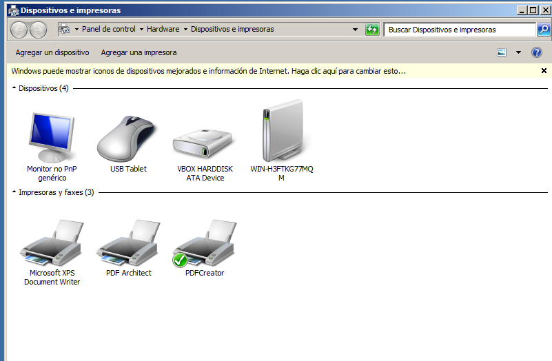
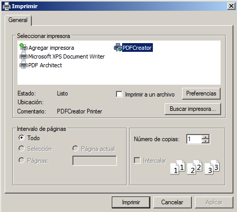
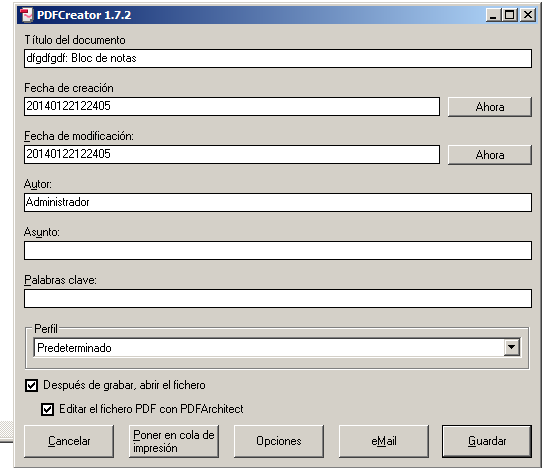
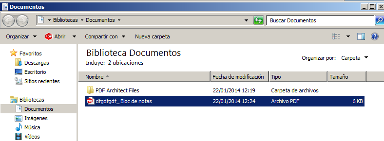
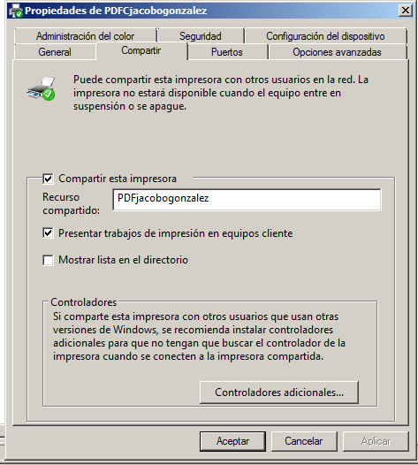
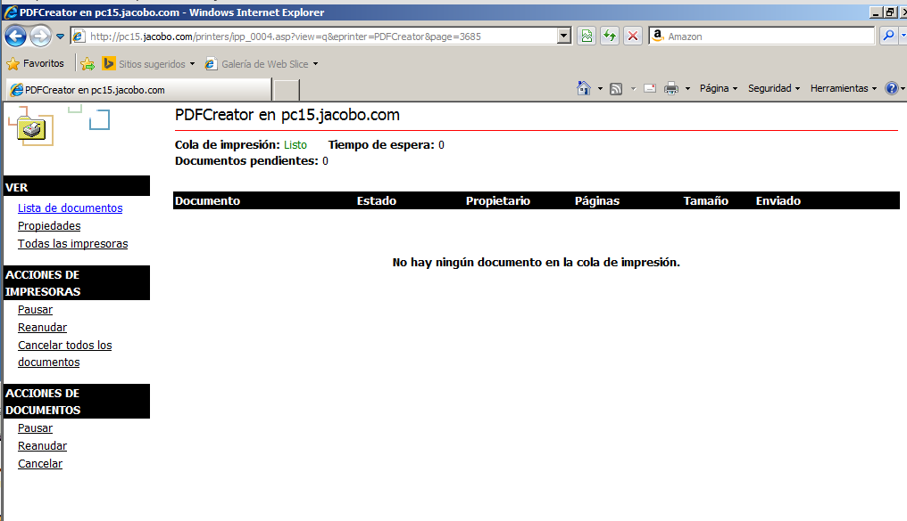
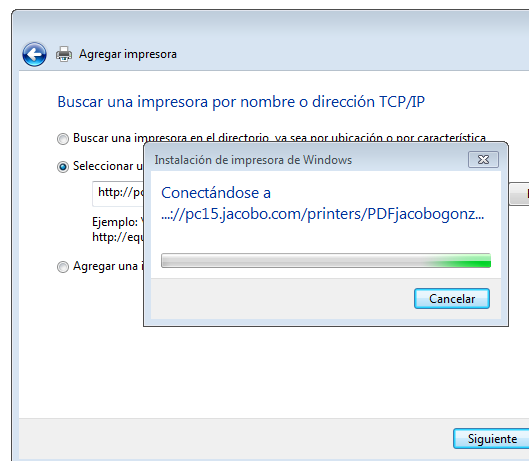
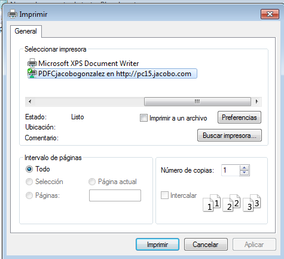
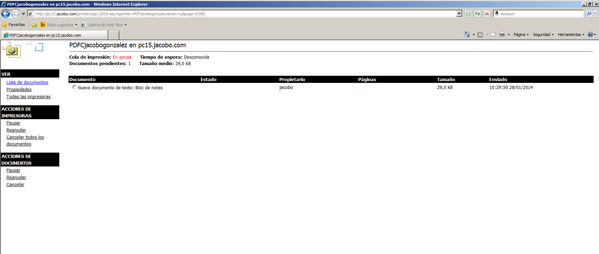

- Módulo: Sistemas Operativos
- Título del trabajo Plantilla HTML entrega de trabajo
- Componentes del grupo: Jacobo Gonzalez Dorta
- Curso Académico: 2013/2014
- Fecha de entrega: 29 de Enero de 2014
Lo primero que tenemos que hacer es instalar en nuestro servidor la impresora pdf reader que es una aplicación que nos permite emular una impresora y lo que hace esta es que cuando imprimimos nos genera un pdf.  Probamos que nuestra impresora es capaz de imprimir   comprobamos que se ha generado correctamente nuestro pdf en la ruta que le hemos asignado 
Realizaremos una configuración para habilitar el acceso web a las impresoras del dominio.  y probamos que podemos acceder desde nuestro navegador web 
Una vez acabado todo en el servidor nos dirigimos a nuestro cliente windows 7 conectado en dominio e intentamos imprimir un archivo desde el cliente. Para ello tenemos que agregar primero la impresora  cuando agregamos la impresora imprimimos un archivo y como tenemos la impresora pausadas debería aparecer en el servidor en la lista de archivos pendientes.  
En conclusión me ha parecido una práctica sencilla y bastante intuitiva